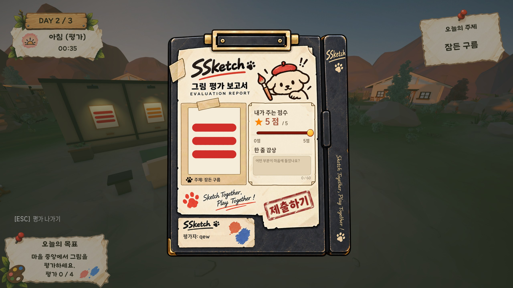

SSketch · 어떤 문제부터 고쳐야 하는가
발표 피드백 30여 건 가운데 약 3분의 1이 ‘평가의 공정성’ 한 곳에 몰려 있었습니다.

4인 멀티플레이 파티 게임 · 6인 팀 · 2026.08–09 · 특화 프로젝트 우수상(반 3등)
지적 유형별 건수 · 한 응답에 여러 지적이 있으면 각각 셈
잘 그리면 절도의 표적이 되고, 못하면 하위권 보상 아이템을 받습니다. → ‘적당히 못 그리기’에 이중 보상이 걸리는 하향 평준화 압력
- 문제
발표 뒤 받은 피드백에서 같은 걱정이 표현만 바뀌어 반복됨
- 관찰
30여 건을 12개 유형으로 묶고 빈도순 정렬 — 평가 담합·보복 투표 약 11건 1위
- 판단
담합은 기획서가 의도적으로 허용한 설계 → 설계보다 ‘왜 허용했는지’ 설명이 빠진 문제
- 행동
대응을 3단계 우선순위로 정리하고, MVP 발표에서 지적마다 허용 / 장치 / 제작 중 / 미도입으로 답변
- 검증
플레이테스트 수치 검증은 하지 못함. 버그·건의 설문을 재현 가능한 형태로 설계해 다음 확인의 출발점을 만듦
상세 분석 보기 · 12개 유형 전체 · 허용한 결정과 청중 반응 · 대응 우선순위
01문제
SSketch는 낮에 그리고, 밤에 훔치고, 아침에 익명으로 평가하는 4인 파티 게임입니다. 점수는 그린 사람이 아니라 아침에 그림을 가진 사람이 받습니다. 기획안 발표 뒤 받은 피드백 30여 건에서 “점수가 왜곡될 것 같다”는 걱정이 표현만 바뀌어 반복됐습니다.
- 내 그림을 도둑맞으면, 그 그림에 일부러 낮은 점수를 줄 것 같다 (5건 이상 중복)
- 점수가 현재 소유주에게 가므로, 완성도가 아니라 ‘누구에게 점수를 주면 내가 유리한가’로 채점하게 될 것
- 하위권끼리 담합하거나 1등 그림에 낮은 점수를 주는 전략이 나올 것
02관찰 — 빈도 집계
| 순위 | 지적 내용 | 건수 |
|---|---|---|
| 1 | 평가 담합 / 보복 투표로 점수가 왜곡될 것 | 약 11 |
| 2 | 절도를 왜 하는지, 점수와 어떻게 연결되는지 모르겠다 | 6 |
| 3 | 절도·훼손의 구체적 과정 설명 부족 | 5 |
| 4 | 그림 실력 격차 / 진입장벽 | 5 |
| 5 | 요소가 많아 복잡함 / 구현 난이도 | 3 |
| 6 | AI를 객관 평가에 활용하면 좋겠다 | 3 |
| 7 | 차별성·주제 설득력 부족 | 3 |
| 8 | 세션 길이가 길다 | 2 |
| 9–12 | 인원 확장 · 밤 절도 성공률 · 러버밴딩 악용 · 익명성 붕괴 | 각 1 |
원본: SSketch 발표 피드백 정리 (2026.08.28) · 내용 없는 응답 3건은 집계에서 제외
2위 6건(“그림을 왜 훔치나요?”)은 모두 기획서에 답이 있는 질문이었습니다. 소유권이 넘어가면 점수도 넘어간다는 규칙이 발표에서 전달되지 않았습니다.
03판단
① “허용하기로 한 것”이 결함으로 읽혔습니다.
| 기획서의 결정 | 청중의 반응 | 건수 |
|---|---|---|
| 담합·보복 투표는 정치질의 일환으로 허용 | 공정성이 없다 | 11 |
| 백지 전략도 전략의 일종으로 허용 | 4등을 유지하다 역전하면 되지 않나 | 1 |
| 동선 추적으로 정체를 추정하는 것은 허용 | 익명성이 깨진다 | 1 |
세 경우 모두 팀은 답을 갖고 있었지만 발표에는 없었습니다. 규칙만 설명하고 “왜 그렇게 두었는가”를 말하지 않으면, 듣는 사람은 미완성으로 받아들입니다.
② 하향 평준화 압력 — 실제로 검토가 필요한 지적
“잘 그리면 표적이 되고 빼앗기면 점수를 전부 잃으니 적당히 못 그리는 게 합리적”과 “일부러 4등을 유지하다 버프 아이템으로 역전”을 합치면 하나의 구조 문제가 됩니다. 절도와 러버밴딩이 같은 방향으로 작용해 ‘적당히 못하기’에 이중 보상이 걸립니다.
③ 판단을 보류한 것
“모두가 훔치러 다니는 걸 아는데 감속 페널티까지 있으면 절도 성공률이 너무 낮지 않나”는 타당한 걱정이지만, 맵 크기와 감속률이 정해지지 않은 시점이라 판단할 수 없다고 적어 두었습니다.
04행동
| 순위 | 대응 | 이유 |
|---|---|---|
| 1 | 발표 자료 수정 — “훔친 그림의 점수는 도둑이 가져간다”를 별도 장표로, “의도적으로 허용한 것” 한 장 추가 | 설계를 바꾸지 않고 지적 17건(1·2위)에 답할 수 있음 |
| 2 | 설계 검토 — 원작자 점수 / 소유 점수 분리, 러버밴딩 지급 조건 재검토 | 하향 평준화 압력의 근본 대응 |
| 3 | 범위 판단 — 라운드 수 자유 선택, 인원 확장, 그림 저장 | 저장 기능은 UGC 관리 의무가 따라붙음 |
- MVP 발표에서는 지적마다 허용 / 장치 / 제작 중 / 미도입으로 대응을 나눠 답했습니다. 모든 지적을 고치겠다고 하면 일정이 무너지고, 답하지 않으면 같은 질문이 반복됩니다.
- 그림을 든 사람의 운반 감속률을 10%에서 30%로 올렸습니다. 10%로는 느려진 것을 플레이어가 알아채지 못해 추격이 성립하지 않았습니다.
05검증
대응 효과를 플레이테스트 수치로 확인하지는 못했습니다. 대신 배포 뒤 받을 제보가 재현 가능한 형태로 들어오도록 설문을 설계했습니다.
- 첫 질문에서 버그 제보 / 건의 사항으로 갈라 상관없는 질문을 건너뛰게 함
- 버그 제보는 문제 유형, 로비부터 엔딩까지의 발생 시점, 스크린샷·영상을 받음
- 모집글에 제보 요령(시간대·인원·방장 여부)을 함께 안내
기여 경계 — 방 만들기의 ‘인공지능 평가자’ 항목, 연막탄·섬광탄 구현은 팀원 작업입니다.